SEU ESPAÇO DE JOGOS RETRÔ
Explore nossa biblioteca
baixe seus jogos e jogue online.
Explore uma biblioteca de jogos clássicos com o DL RETRO GAMES. Baixe seus favoritos e jogue online diretamente pelo navegador, tudo em uma plataforma feita para oferecer praticidade, variedade e nostalgia.
Explorar jogos →Ver consoles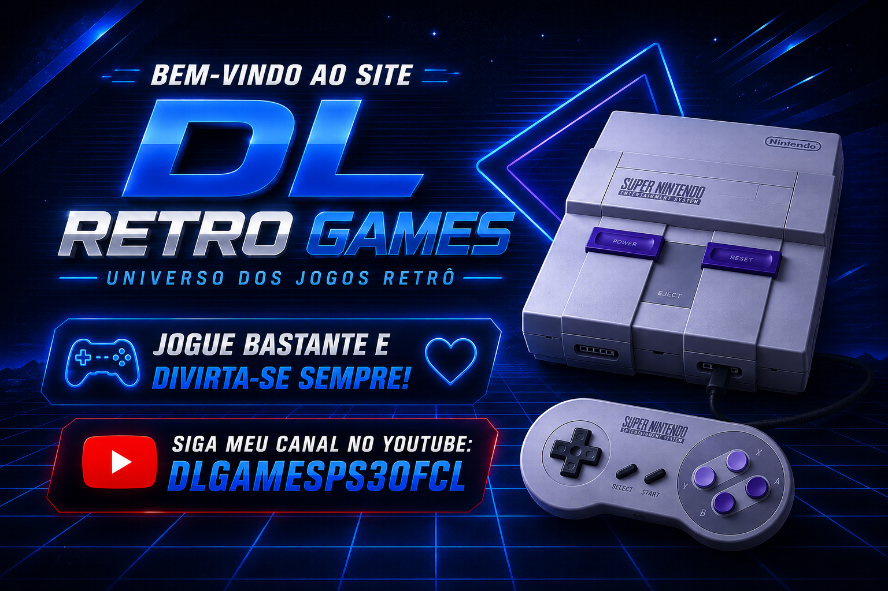
Consoles clássicosVárias gerações
Busca rápidaEncontre um título
Feito para fãsPaixão por games
Novos jogosCatálogo em expansão
ESCOLHA SUA GERAÇÃO
Explore por console
Relembre os videogames que fizeram história.
CATÁLOGO DL
Jogos em destaque
Escolha um jogo para conhecer mais.
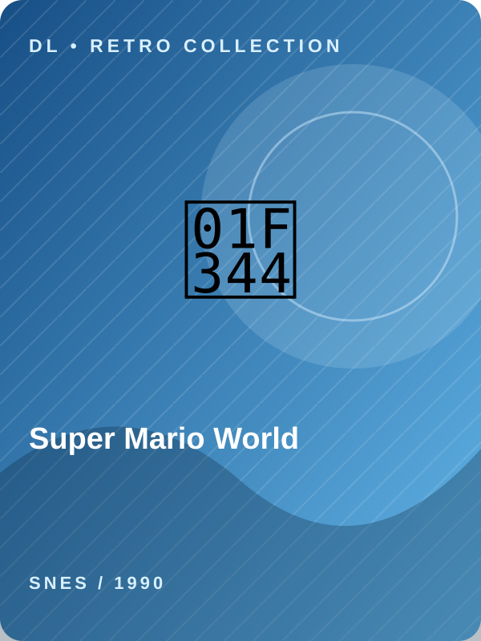
Super Mario WorldPlataforma · 1990SNES
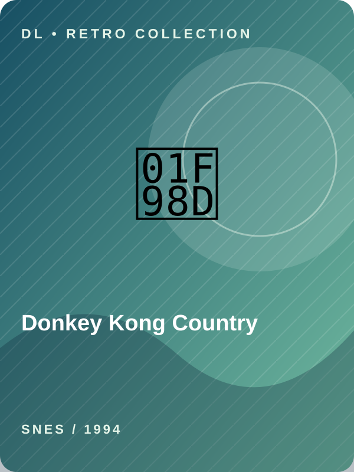
Donkey Kong CountryAventura · 1994SNES
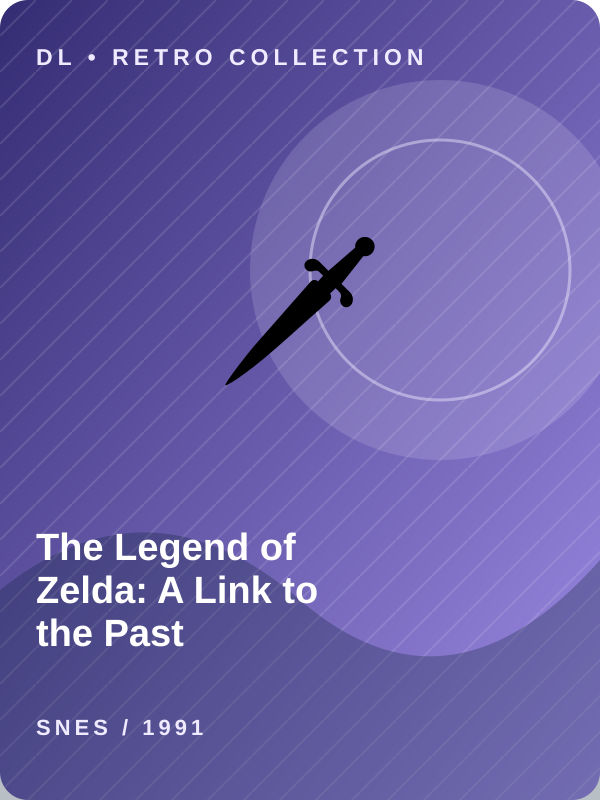
The Legend of Zelda: A Link to the PastAventura · 1991SNES
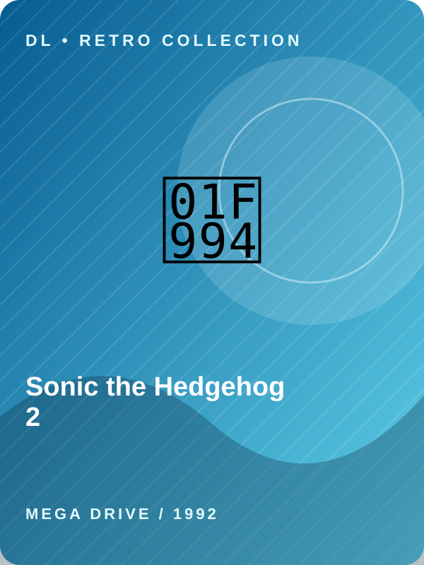
Sonic the Hedgehog 2Plataforma · 1992MEGA DRIVE
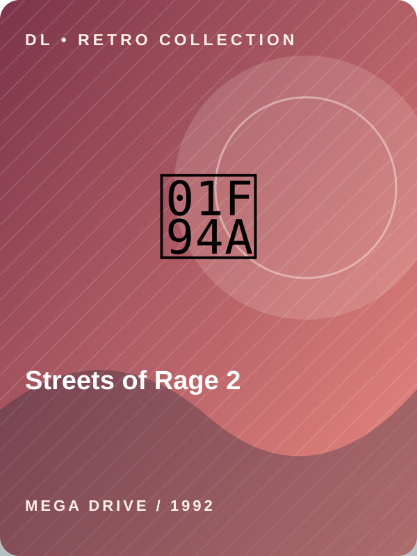
Streets of Rage 2Ação · 1992MEGA DRIVE
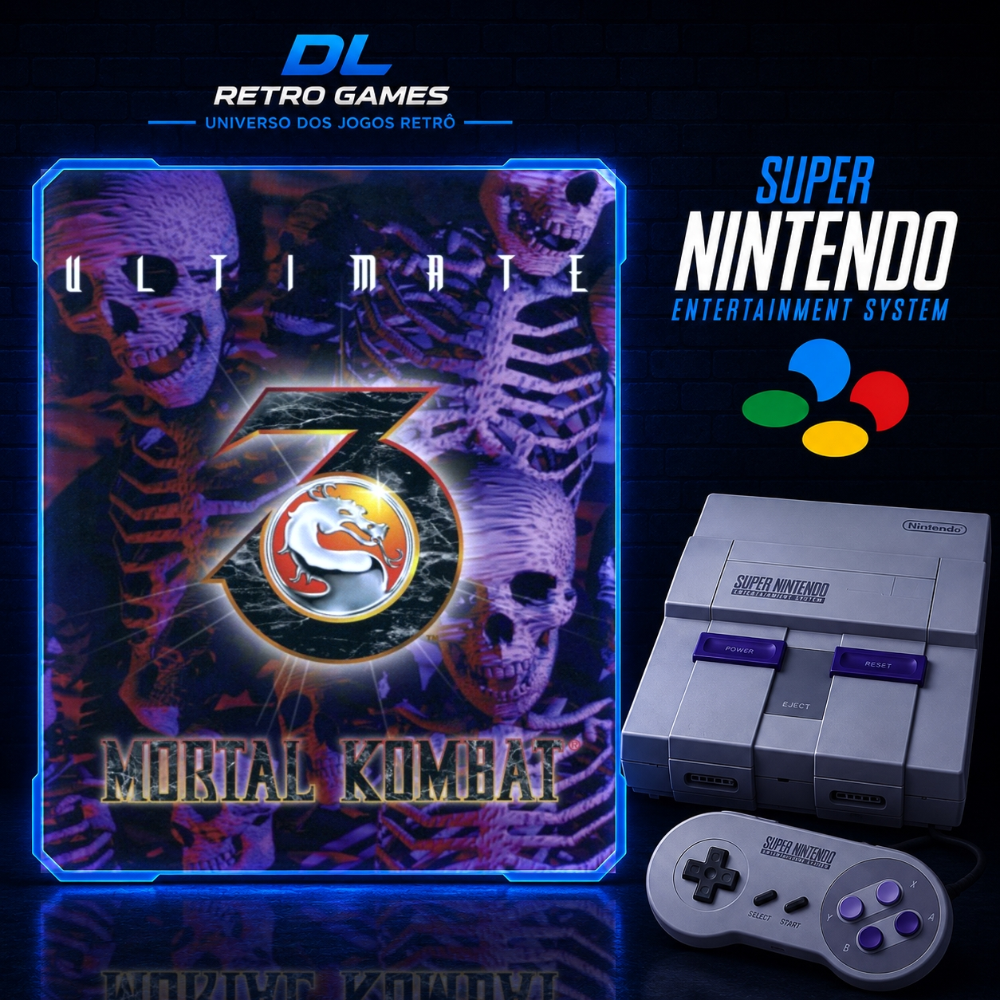
Mortal Kombat Ultimate 3Luta · 1993SNES
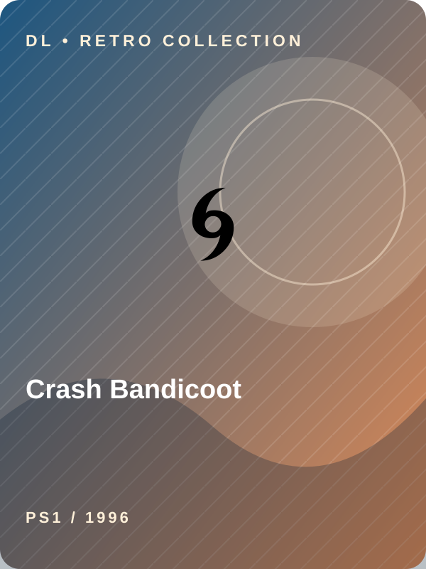
Crash BandicootPlataforma · 1996PS1

Tekken 3Luta · 1997PS1
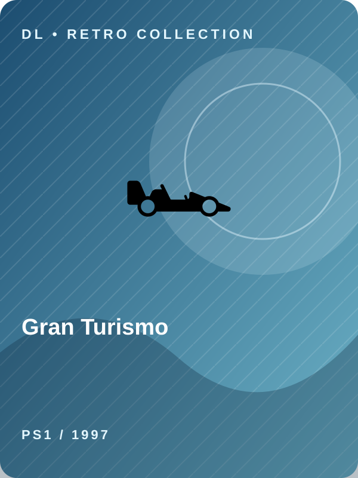
Gran TurismoCorrida · 1997PS1
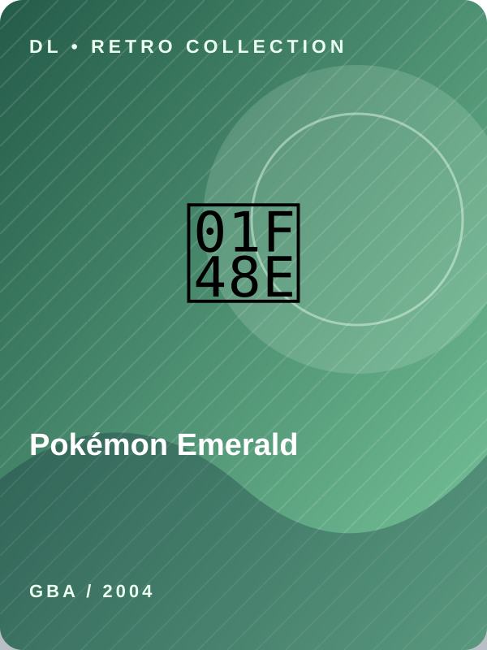
Pokémon EmeraldRPG · 2004GBA
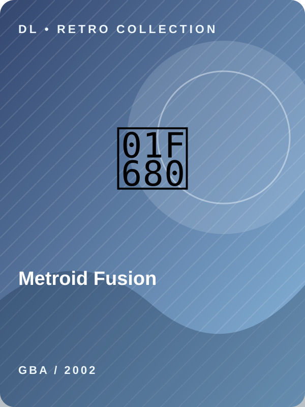
Metroid FusionAção · 2002GBA
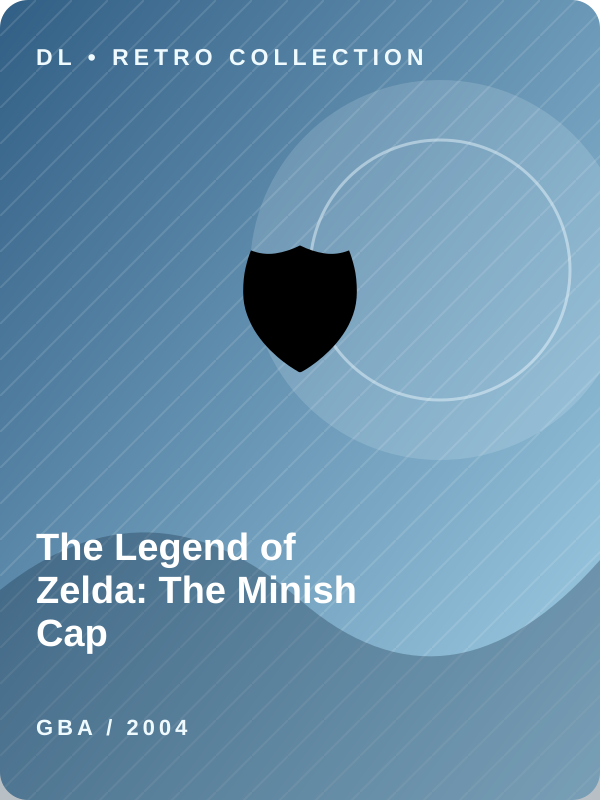
The Legend of Zelda: The Minish CapAventura · 2004GBA
Bem-vindo à DL SERVIDOR
Um projeto independente para celebrar os videogames clássicos. O catálogo vai crescer com mais jogos, consoles e novidades.